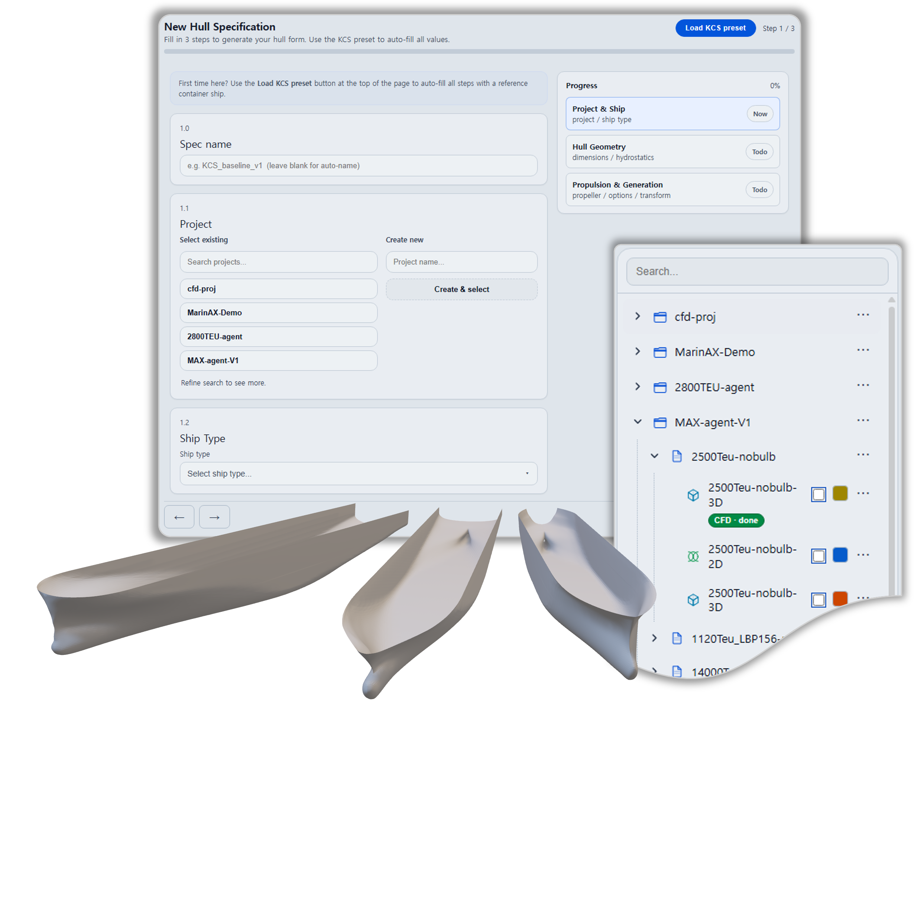
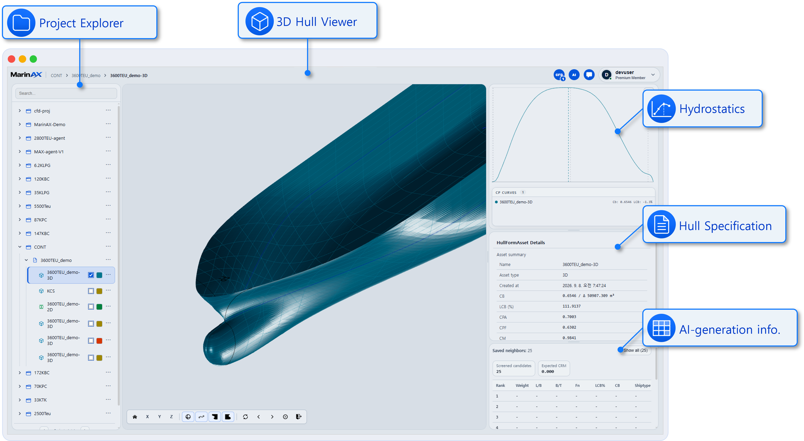
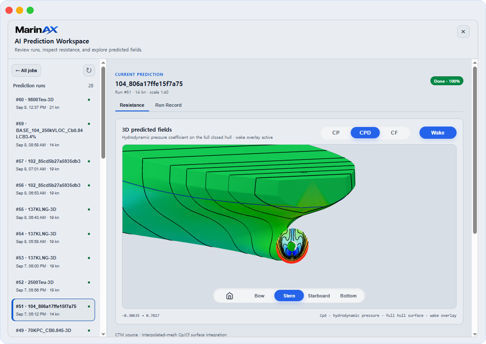
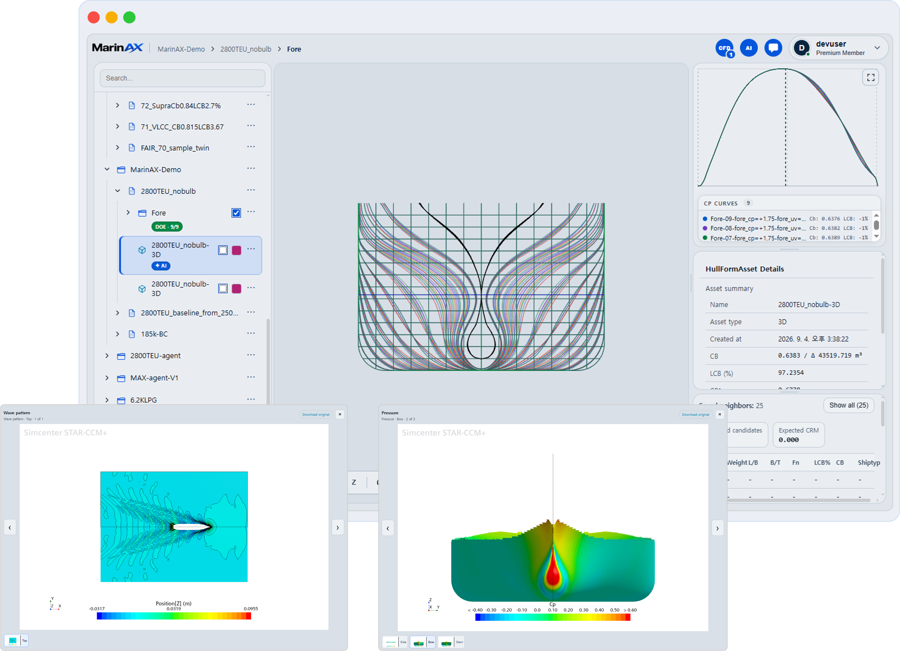

AI × SHIP DESIGN
Generate Hull Form.
In A Few Second
Generate hull forms tailored to your requirements in seconds, complete with AI-predicted flow field information.

Scroll to explore
Busan · Seoul · Global
Built for the people shaping tomorrow’s vessels
01 — Capabilities
From a blank brief to a validated hull.
01

Loading hull forms



FAQ